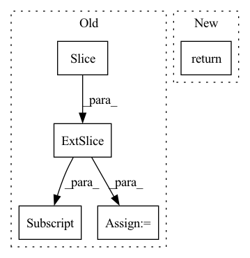

Pattern ID :1006
Before Change
factors_updown = factors[:,:nup,nup:]
// electron pairs up up
factors_upup = factors_[:,:nup,:nup]
factors_upup = factors_upup[:,torch.tril(torch.ones(nup,nup))==0]
// electron pairs down,down
factors_downdown = factors_[:,nup:,nup:]After Change
factors = torch.exp(self.static_weight * input / (1.0 + self.weight * input))
//factors = factors[:,torch.tril(torch.ones(self.nelec,self.nelec))==0].prod(1)
factors = factors.sum(2).sum(1)
return factors.view(-1,1)
//return JastrowFunction.apply(input,self.weight,self.static_weight)
In pattern: SUPERPATTERN
Frequency: 3
Non-data size: 5
Instances Fragment ID: 3071710
Project Name: nlesc-jcer/qmctorch
Commit Name: 367e2652236e20fd44c930c0364147f2315f419c
Time: 2019-06-26
Author: nicolas.gm.renaud@gmail.com
File Name: pyCHAMP/wavefunction/wave_modules.py
M Class Name: TwoBodyJastrowFactor
N Class Name: TwoBodyJastrowFactor
M Method Name: forward(2)
N Method Name: forward(2)
M Parent Class: nn.Module
N Parent Class: nn.Module
M File Name: pyCHAMP/wavefunction/wave_modules.py
N File Name: pyCHAMP/wavefunction/wave_modules.py
M Start Line: 97
M End Line: 110
N Start Line: 78
N End Line: 81
Before Change
idx_theta2 = torch.cat([idx_theta, idx_theta], dim=1)
// Calculate $[-x^{(\frac{d}{2} + 1)}, -x^{(\frac{d}{2} + 2)}, ..., -x^{(d)}, x^{(1)}, x^{(2)}, ..., -x^{(\frac{d}{2})}]$
neg_half_x = torch.cat([-x[:, :, :, d_2:] , x[:, :, :, :d_2]], dim=-1)
// Calculate
//
// \begin{align}
// \begin{pmatrix}
// x^{(i)}_m \cos m \theta_i - x^{(i + \frac{d}{2})}_m \sin m \theta_i \\
// x^{(i + \frac{d}{2})}_m \cos m\theta_i + x^{(i)}_m \sin m \theta_i \\
// \end{pmatrix} \\
// \end{align}
//
// for $i \in {1, 2, ..., \frac{d}{2}}$
rx = (x * idx_theta2.cos()[:, None, None, :]) + (neg_half_x * idx_theta2.sin()[:, None, None, :])
//
return rxAfter Change
x_rope = (x_rope * self.cos_cached[:x.shape[0]]) + (neg_half_x * self.sin_cached[:x.shape[0]])
//
return torch.cat((x_rope, x_pass), dim=-1)
class RotaryPEMultiHeadAttention(MultiHeadAttention): Fragment ID: 3071724
Project Name: lab-ml/nn
Commit Name: 0ce65adf9e602321109528b05cf99fccb16cd2de
Time: 2022-06-03
Author: vpjayasiri@gmail.com
File Name: labml_nn/transformers/rope/__init__.py
M Class Name: RotaryPositionalEmbeddings
N Class Name: RotaryPositionalEmbeddings
M Method Name: forward(2)
N Method Name: forward(2)
M Parent Class: nn.Module
N Parent Class: nn.Module
M File Name: labml_nn/transformers/rope/__init__.py
N File Name: labml_nn/transformers/rope/__init__.py
M Start Line: 132
M End Line: 163
N Start Line: 171
N End Line: 193
Before Change
x = self.embedding(x) // (batch_size, target_seq_len, d_model)
x *= math.sqrt(self.d_model)
x += self.pos_encoding[:, :seq_len, :]
x = self.dropout(x)
// Batch first = True in decoder
for i in range(self.num_layers):After Change
normed_output = self.layer_norm(output)
output = output + self.dropout(self.position_feed_forward[i](normed_output))
return self.layer_norm(output)
Fragment ID: 3071716
Project Name: mindee/doctr
Commit Name: fddceba7bee5098b4219b7ba6a0bdf4f4a98adfe
Time: 2022-06-09
Author: felixdittrich92@gmail.com
File Name: doctr/models/recognition/transformer/pytorch.py
M Class Name: Decoder
N Class Name: Decoder
M Method Name: forward(5)
N Method Name: forward(5)
M Parent Class: nn.Module
N Parent Class: nn.Module
M File Name: doctr/models/recognition/transformer/pytorch.py
N File Name: doctr/models/recognition/transformer/pytorch.py
M Start Line: 74
M End Line: 91
N Start Line: 147
N End Line: 167